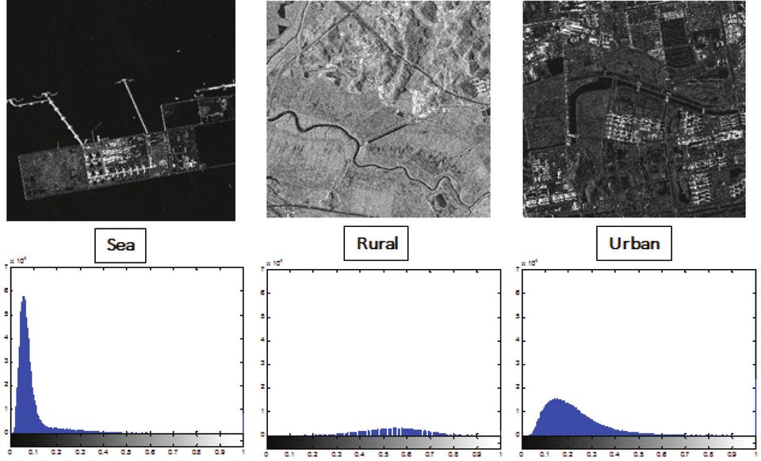

연구실적 · 국내전문학술지
통계분포에 기반한 고해상도 SAR 영상의 변화탐지 알고리즘 구현
Change detection algorithm based on amplitude statistical distribution for high resolution SAR image

초록
최근 위성 Synthetic Aperture Radar (SAR) 영상의 해상도가 개선됨에 따라 이에 대한 수요가 증가할 것으로 보이며 향후 새로운 응용시장으로 성장할 것으로 예측되고 있다. 특히, 화산이나 지진과 같은 자연 재해에 대한 예측이나 지형의 미세한 변화를 탐지하기 위한 용도로 SAR 영상의 활용도가 증가하고 있다. 기존의 ...
사이트 원문 표기
이기웅, 강서리, 김아름, 송경민, 이우경, “통계분포에 기반한 고해상도 SAR 영상의 변화탐지 알고리즘 구현”, 대한원격탐사학회지, 제31권 3호, 2015년 6월
BibTeX
@article{Lee_2015,
title={Change detection algorithm based on amplitude statistical distribution for high resolution SAR image},
volume={31},
ISSN={1225-6161},
url={http://dx.doi.org/10.7780/kjrs.2015.31.3.3},
DOI={10.7780/kjrs.2015.31.3.3},
number={3},
journal={Korean Journal of Remote Sensing},
publisher={The Korean Society of Remote Sensing},
author={Lee, Kiwoong and Kang, Seoli and Kim, Ahleum and Song, Kyungmin and Lee, Wookyung},
year={2015},
month=June,
pages={227–244}
}